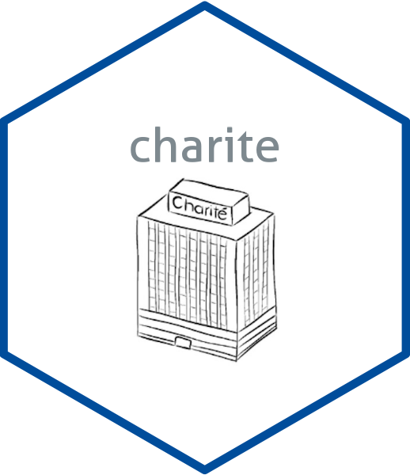
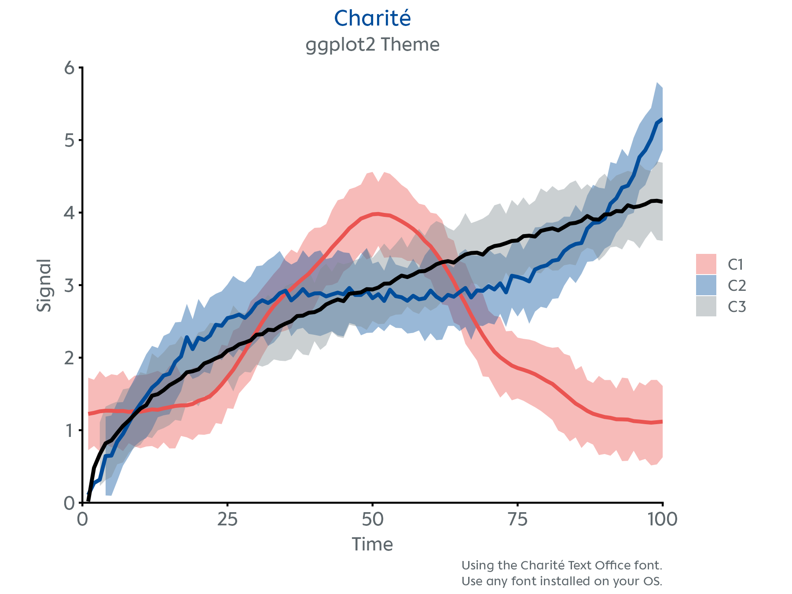
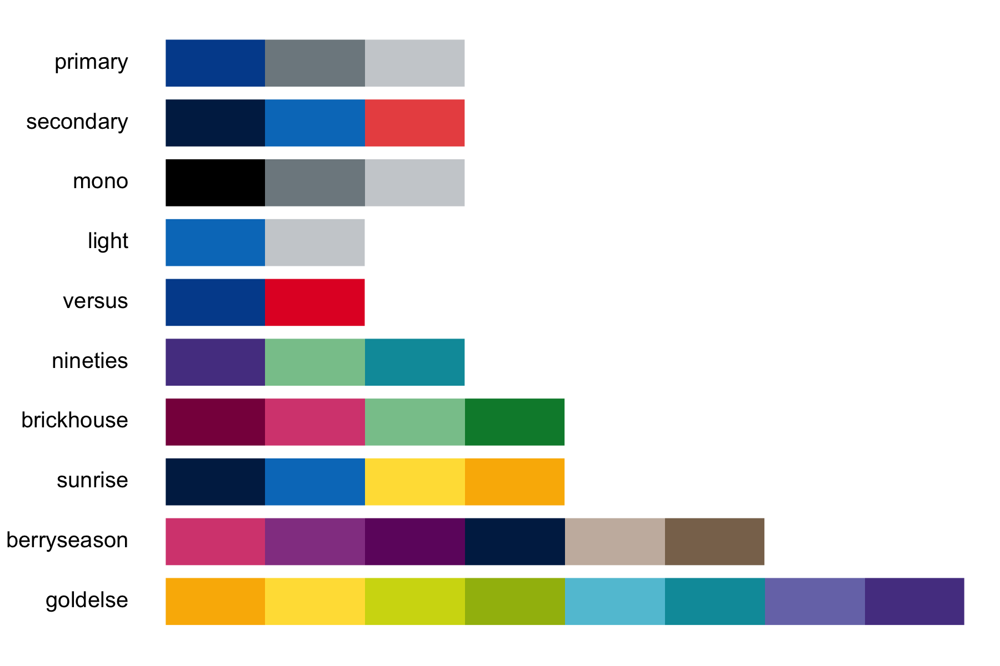

A minimal R package with a Charité-styled ggplot2 theme, visual identity colour palettes, and publication-ready figure export for manuscripts and slides.
Installation
You can install the charite package from GitHub with:
# install.packages("devtools")
devtools::install_github("johannesjuliusm/charite")To install the package on a machine with proxies, e.g., the standard Windows PC in the Charité network, find more detailed installation instructions in the installation vignette.
Examples
Visualize your data with theme_charite() to match the corporate style.

Preview the available colour palettes.

Workflow
# create your ggplot2 figure
p <- ggplot(data, aes(x = x, y = y)) +
geom_point(size = 3, color = charite_colors$HIMBEER) # use any of the Charité colors
# format the plot style
p <- p + theme_charite()
# alternatively, customize the plot style further
# for example by specifying a font
p <- p + theme_charite(font = "Charité Text Office")
# easily save your plot in a format optimized for slides and publications
nice_save("myfigure.png", p, layout = "slides")Available Functions
-
theme_charite()– A custom ggplot2 theme -
charite_colors– Named list of hex codes of the Charité colours -
charite_palettes– Named list of colour palettes derived from the Charité visual identity -
preview_charite_palettes()– Shows the available colour palettes -
nice_save()– wrapper ofggplot2::ggsave()for high-res publication-ready figures -
scale_color_charite()– ggplot2 colour scale using thecharite_palettes -
scale_fill_charite()– ggplot2 fill scale using thecharite_palettes -
example_plot()– A demo plot -
make_charite_palette()– Internal function to interpolate or reverse colour palettes -
virchow()– Surprise ASCII art. Use for fun -
motivate()– Get some motivation when stuck -
curves– Included dataset for demo plot
Acknowledgements
Developed by Johannes Julius Mohn (Max Planck School of Cognition & Charité – Universitätsmedizin Berlin)
Get in touch via johannes.j.mohn@maxplanckschools.de
The hex logo was designed by Valentina Nercolini.charite is now also available as a python package developed by Pedram Ramezani.